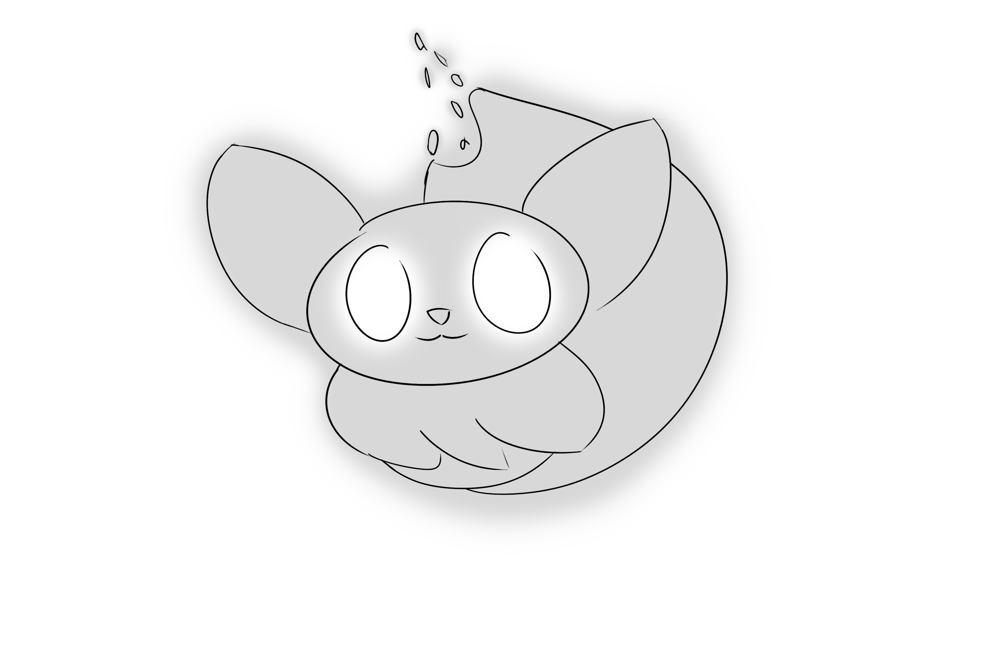

"Mess up once, it looks ugly. Mess up many times, then it becomes your style" - unknown

Link to the game: Lucid Dream
Lucid dream is a video game made using twine and developed by Cole and Christian (me). Lucid Dream is an interactive exploration of emotional connections. Our game's story starts with the player falling asleep and entering the dream world. In the dream world, the player meets a fox that represents the player's subconscious and guides them through the game. The player adds their own characters to the story, similarly to how one's subconscious adds characters to a dream from memory. Whether the player wants to choose personal or silly choices is up to them. The scripted story is injected with the chosen characters to make the story personal. The art supports the story by being ambiguous so that the player can apply their own feelings and associations. The player responds to each part of the story by choosing four different open-ended emotions. This is to allow the player to contemplate on how they feel towards the given event and their emotional connection with these specific characters. At the end, the fox responds back to the player, which allows the player to reflect on their whole experience of the dream.
This project was also diplayed during the CADRE Mentorship's Dreamscape exhibition in new art city!